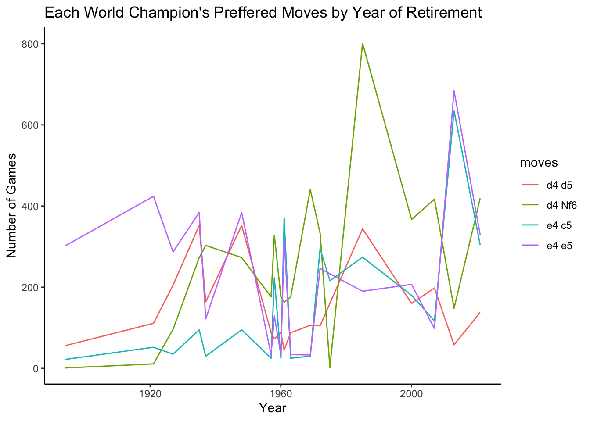

Chapter 4 Results
4.1 Initial Broad Exploration
To get an initial overarching context for our dataset, lets first take a look at the number of wins, losses, and draws by the white pieces in our dataset.
As we are not only selecting for the best players in the world, but also where they played white–the statistically stronger color–it is unsurprising that the distribution is heavily weighted toward a white victory. Notably, there is a frequency of draws in chess, particularly at the top level. In fact, if our data did not have draws and victories at the same order of magnitude, we would have been suspicious. Still, it does reveal that even the top of the line players aren’t infallible, with a relatively small but significant 5000 combined losses.
To gain insight as to how each of these were accrued, we now split up the results by individual players.
First, the proportion of (recorded) games played aligns with our expectations. The top selection is comprised entirely of modern-era players, both GMs (Nakamura, Grischuk, Mamedyarov…) and recent World Champions (Karpov, Anand, Carlsen), whereas the bottom are predominantly historical World Champions– the exceptions being the lies of Liren: the top Chinese player, suggesting an unknown but not-too-surprising berth of data on China, and Firouzja: a notably young grandmaster who hasn’t had the time to have as lengthy a game history.
Of course, the exact breakdown of each player’s proportions is unique, and world champions have better records. Yet all of them show the same general hierarchy of wins > draws > losses. Perhaps a different trend would emerge if we also had the data where they play on black, but given time and feasibility constraints, for the scope of this project we unfortunately had to narrow our focus onto white.
So. With that in mind, who are the players they are playing against? Why are these records so winning? In particular, how do they match up in terms of ELO?
Immediately we see that most of the games took place between players in the 2000~3000 range, clustered in an oval below but close to the y = x line, revealing a higher white ranking. While the white skew is unsurprising–we are reviewing the top players, after all–it does show that these games take place at a similar caliber at least, lending credit to their win ratios.
There are quite a number of outliers as well, with a visible amount below, to the left, and to the right. Below are the recorded games our players had while they were up-and-coming, while to the left are a combination of those games and presumably lower ranked players they happened to play against in the early phases of tournaments and the like. The faint dots to the right, however, are indicative of an interesting, uniquely modern trend.
The ELO system is inherently zero-sum, with players losing and winning an equal amount of rating depending on their relative rankings and the result–a highly ranked player will not gain much rating by beating a lower ranked one, sometimes nearly zero if the rating disparity is large. However, with the rise of modern platforms and the internet, far more players can participate in a ranked system than ever before. Therefore, since there are more players, there is also more raw ELO to go around, pushing up the ranking of the current super grand masters. And yet, that ELO is only inflated online, where the game is at its most accessible. Offline tournaments are the height of competition, and the very same players typically range between 2700 and 2900 in that setting: at the upper end but still within our cluster. All told, it is clear that some of our dataset’s games still are being played in this online format, and inspection into the data before it was cleaned can confirm this. While it looks like there are a handful of games taking place at the >3000 range, the overwhelming majority are not, most are not. This suggests that nearly all of the games recorded in the database were played offline, and thereby reflecting on what games chess.com prioritizes bookkeeping.
4.2 An Individual Player
For a case study, we’ll take a deeper dive into the current long-standing top ranked played Magnus Carlsen, in particular regarding his ratings.
This graph has a few important findings. Firstly, while the lion’s share of the data is once again around the same high range seen before, it shows games where Carlsen was rated below 2100, which must have taken place when he was young. Clearly, that supports our earlier theory that the database does not solely represent the games where our players were in their prime. Additionally, we can spot an interesting pattern in his rating data–there are visible vertical lines where white’s ELO was seemingly identical, and more than a few of them. Were there then many games taking place with truly the same ELO?
Upon binning his ratings for a closer inspection, it appears that yes, our previous suspicion that many games took place at the same rating is well-founded. Of course, we cannot discard the possibility that Carlsen naturally reached the same rating at multiple points in his career. However, if that were the sole factor at play, the bins between should at least be somewhat populated. Additionally, it could also be that our data is but a paper trail of the true, complete dataset, where such a graph as above could appear far smoother. To an extent, that is unavoidable–but alone this is not sufficient evidence as to an egregious error so much as merely take note.
Instead, a more likely supporting reason arises. FIDE, the International Chess Federation, only updates a player’s ELO rating once a month. This means if a player plays in a few tournaments over the course of a month, they could play tens of games, all with the exact same rating. For up-and-coming players such as past-Carlsen, who could claim multiple victories over players with much higher ratings (but not necessarily true skill), this could easily result in massive gains as the observed posts indicate.
Now, our proposal was regarding both these players and the game itself, in particular the openers. Though there are a ‘limited’ number of moves to take, especially once narrowed down to moves that make any amount of strategic sense, there are still an innumerable amount of chess games. Therefore, it’s hard to glean much of the later moves at this scale. But the openers are a different story. Lets investigate the most frequent opening moves.
4.3 Opening Move Proportions and Results
Above, we see the graph of most common first moves from the white and the black players. Before any analysis, we must interpret the notation of chess moves. When documenting chess moves for knights, rooks, bishops, kings, or queens, an N, R, B, K, and Q will be used respectively. These letters are capitalized. If no capitalized letter is present at the start of the move, this means that a pawn is moved forward. The last two characters in most cases correspond to the square that the piece will move to. If a piece is captured during the move, an x is placed before the square that the piece is captured on; a capture is impossible in the first move, and from the exploration still quite rare for the first few moves. There are other special cases for chess documentation, none of which are present in the further analysis. Furthermore, this is extremely standardized, and we believe there are a negligible amount of notational errors in the dataset for our purposes.
Amongst the best chest players, after one move from each player, the most common board situation is that of d4 Nf6. With the agreed notation in mind, this means that the white pawn that starts on d2 moved to d4, and subsequently the black knight that starts on g8 moved to f6. Moving to a more general lens, the first move is overwhelmingly white moving either their e or d pawn 2 spaces forward. This can clearly be seen from the graph above. Seven of the ten most common opening moves start with one of these two initial thrusts forward into the center, working toward an initial gambit of board control. Black usually plays similarly, through moving one of their own pawns forward by 2 (e5, c5, or d5), or responding with moving a knight over the vanguard line of pawns.
Tying those initial moves into their possible results, this graph shows the most common moves and their results by past world champion. It’s rather messy, but still useful; let’s dive into the moves of a couple of players. Former world champion and still active player Viswanathan Anand clearly favors playing e4 over d4. We can see from the alluvial diagram that the amount of games that he played against the Sicilian defense (e4 c5) and in double kings pawn games (e4 e5) greatly outnumbers the number of games he played starting with d4. Bobby Fisher had a similar preference for e4. Fisher has a famous quote saying that e4 is “best by test.” On the other hand, similarly skilled players like Anatoly Karpov played d4 more than e4. At the end of the day, while it determines the early shape of the game, there is a certain flexibility in apparent rigidness, and lot of opening preparation comes down to personal preference.

While we were hoping to conduct an investigation into the moves over time, that proved troublesome. While typically present, the date portion of the record was the messiest of the relevant statistics to the point of dissuse–many games had a recorded date of when it was recorded or entered into the database, and not the original game itself! A few games by Bobby Fischer, who is deceased of quite a few decades, had a “date” into the 2020s!
Still, we can still discern a little insight by charting what the World Champion of each time played the most. Unhelpfully, here has not been much of a clear trend of changes in usage for any of the top four most common moves over time outside of for e4 c5’s popularity being a relatively recent phenomenon. All other common openings appear to change randomly, likely with the world champion’s preference.
4.4 Move to move relation
To understand the opening sequence of moves, lets look at the most board positions after a couple of moves, where the game truly begins to emerge into its own shape. Guiding this analysis, we target specifically d5 Nf6 and e4 e5, the two most common moves in our dataset.
First, let’s consider the opening moves d4 Nf6. In this case, the most common reply by white is c4. This move pattern indicates that an Indian defense, known for it’s sharp tactics and aggression, will be played. The following two most common moves by black set up different variations of the defense. E6 sets up a Nimzo-Indian Defense and g6 sets up a king’s Indian defense. The remaining portion for move 2 is relatively small, though the following move three dispels most of the regularity. In most cases, white then moves their knight, and the game opens widely from then on.
The position after the starting moves e4 e5 results in a different battle, one for control of the center of the board. The subsequent move Nf3 Nc6 dominates most other moves, with a higher order of regularity than seen even in the previous move. Nf3 threatens e5, and black must respond to the threat, so correspondingly the most common and versatile move is Nc6. This both protects the pawn, and puts pressure on the d4 square, preventing white from striking in the center by playing pawn to d4. Strategically, it simply makes the most sense. After Nc6, Bb5 is a common response from white. This is known as the Ruy Lopez, or the Spanish opening. Here, white is developing their bishop, while also putting pressure on the knight that is now controlling the center of the board. The normalcy of this diagram lasts a little longer than the one seen in d4 Nf6, but even here it breaks down rapidly into moves 3 and 4. Interestingly, the ‘other’ categories here trend toward draws over white victories, and also seem somewhat more black favored than the rest. Perhaps that indicates that past the highly studied opening gambits, white’s given advantage begins to erode as the game devolves into one entirely before unseen.
4.5 Some Longer-Term Stats
We now know more about how these openers play out in the short-term. What about the long term, and for statistics outside of the pure result? For one such quick analysis, lets look at the distribution for game length, once again selecting for opening move.
Curiously, there is actually a pattern here. We don’t have a record for nearly all games, but our dataset is reasonably comprehensive for high-level chess. We can therefore confidently say that some openings lend themselves to longer games, shedding some light on community terminology.
In chess, there is a notion of a positional game versus a tactical game. Positional games involve slowly moving pieces around, trying to eek out a small yet solid positional advantage. Tactical games involve a different course, making sharp threats against the other person’s pieces or directly against the king. Tactical games are thereby more likely to end quickly as pieces are rapidly removed during the attacks–whether that be to the attacker’s favor or not. The graph above suggests that Nf3 d5 results in a more positional game than moves like e4 c5. In particular, out of the moves that our players were likely to play, all of the four most common moves were within one or two moves from each other by the mean. This seems like a particularly jumping off point for a deeper analysis–of what moves that we as data scientists have enough data to be confident about, what sequences result in the greatest change in turn count, be in through variance or median?
Since this isn’t controlled for the number of pieces on the board, it is dully unsurprising that pawns are the most moved piece in any give game. There are eight of them per player, after all, while bishops, rooks, and knights are two per, and kings and queens one to a player. Not only do they outnumber, but they also prevent other pieces from moving until they have been moved out of the way. It is similarly expected that kings are at the bottom of the ranks; in general, choosing to move a king before the end game is viewed unfavorably. This is as the king can only move one square at a time (except when castling), and thus, greater positional and tactical advantages can be gained by moving another piece. However, the king also has a great variance for a single piece, eclipsing that of the queen’s. We think this is as that in many (but far from all) end games, the king either can or must move, as there are both fewer power pieces to threaten it and the player’s own power pieces to use strategically instead. And, naturally, the king must be able to be moved every turn of the game as once its gone, the game has finished. On the other hand, advanced chess players often can conclusively determine the game’s result before it has formally ended, else the king’s maximum may extend even higher.
Turning to the center of the spectrum, when accounting for proportion, the queen tends to get used more than the rest. Again, unsurprising, as it’s the most powerful piece bar none. It tends to not be used only when it has been removed. Between the rest, although their means could be mistaken for each other, each of the knight, bishop, and rook seems to have a different distribution. Knights see use in many openings, as we’ve seen, and have the most unique movement of the bunch, skewing their distribution a little higher with a high lower hinge. Rooks are extremely powerful, and require a sometimes awkward opening to move out onto the field. So in the mean they don’t get often used until they are targeted, keeping their average use to nary more than 3 per piece per game, but with their power and flexibility comes a particularly high pre-outlier maximum. Bishops, meanwhile, while fast and useful, can be comparatively limited in usage–their entire inter-quartile range is the most compressed of all.
All said, none of this is particularly ground breaking, but it is a good sanity check and jumping off point for further analysis. For instance, examining which ranges of turns each piece sees the most use could be of interest, if one had a good algorithm to unilaterally categorize each game into phases.
And that goes for the whole project. Nothing revolutionary, but a comprehensive, data-driven foundation for the history and intricacies of the game of chess.